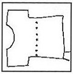
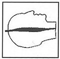

Oh man! These castings are horrible. Oh yeah! Well I bought this kit and it's a
nightmare ... It took me 87.4 hours to repair this kit ... What the @#$'/a is
this $*&!. What? Sandwiches again! Does this sound familiar? It seems to me
that you can't have a kit conversation without hearing these kinds of
statements. Having molded thousands of parts I still can't claim knowing
everything about this art. What I do know is a bad casting when I see one.
The following are the most common problems that make up a bad casting,
what causes them and how they can be avoided.
Some problems such as air bubbles can be easily repaired. Others like a bad
seam can distort the piece leaving'it far from the original sculpture. A
bad seam on say a Creature from the Black Lagoon kit will result in having
to sand away a large portion of its skin detail and leave you with hours
of scribing to make it look presentable.
 AIR BUBBLES: Because of the syrupy consistency of resin it has a tendency
to trap air in tight or narrow areas, causing a partial or hollow casting.
Most areas where bubbles occur are in areas with points, such as noses,
fingers, etc. The solution to these problems are as follows. A) Air
channels can be placed at finger tips to allow the resin to flow past
the tip. B) Pre-Pour a small amount of resin in the problem area before closing
the model for the main pour. Sprinkling talcum powder onto the problem area
will help dislodge an air bubble by absorbing the resin around the bubble.
D) For those with money, a roto cast machine is the way to go, the spinning
action literally slams the resin into the fine detail. E) A pressure pot will
rid you of bubbles by squeezing the air from the mold cavity. Note: On B/ Pre-pour. A
second skin or "skinning" sometimes occurs on pre-poured pieces. This happens
when the resin is allowed to set and pull away from the mold allowing the main
pour to seep between the pre-poured and the mold. Pouring the main pour while
the pre-pour is in it's "gel" stage will remedy this problem.
AIR BUBBLES: Because of the syrupy consistency of resin it has a tendency
to trap air in tight or narrow areas, causing a partial or hollow casting.
Most areas where bubbles occur are in areas with points, such as noses,
fingers, etc. The solution to these problems are as follows. A) Air
channels can be placed at finger tips to allow the resin to flow past
the tip. B) Pre-Pour a small amount of resin in the problem area before closing
the model for the main pour. Sprinkling talcum powder onto the problem area
will help dislodge an air bubble by absorbing the resin around the bubble.
D) For those with money, a roto cast machine is the way to go, the spinning
action literally slams the resin into the fine detail. E) A pressure pot will
rid you of bubbles by squeezing the air from the mold cavity. Note: On B/ Pre-pour. A
second skin or "skinning" sometimes occurs on pre-poured pieces. This happens
when the resin is allowed to set and pull away from the mold allowing the main
pour to seep between the pre-poured and the mold. Pouring the main pour while
the pre-pour is in it's "gel" stage will remedy this problem.

BULLET HOLES: This is what I call the string of air bubbles that go
straight across a piece. This is caused when a mold is not filled to capacity on a
single pour. When a mold is filled partially, bubbles will rise and form around
the rim not unlike a glass of soda. The top off pour will then sandwich the
bubbles causing this effect.

THICK SEAM: This occurs when a mold is not banded tight enough allowing
resin to seep between the mold halves resulting in thick flashing. A mold should
be closed as tight as possible without distorting the piece. another cause of thick seam
lines is the size and weight of the mold. A tall heavy mold can spread under its
own weight causing it to bow around the center allowing resin to fill the gap
between the mold halves. A good solution to this is to sandwich the mold between
two pieces of plywood and clamp it tight. This will give the mold plenty of support
and do away with leaks and thick seam lines.
BAD MIX: A bad mix occurs when the prepolymer and curative components
of the resin are not thoroughly stirred. This results in a translucent casting.
A casting like this will not hold paint and continually secrete an oily residue.
 WEBBING: Webbing are those fine lines you find on what otherwise should
be a smooth surface. This is caused by the wrinkling on the impression area of a
burnt out mold. This is a clear sign that the mold is past its prime and should be
redone. Although a piece with webbing can be sanded smooth it will never equal
an early casting for sharpness of detail.
WEBBING: Webbing are those fine lines you find on what otherwise should
be a smooth surface. This is caused by the wrinkling on the impression area of a
burnt out mold. This is a clear sign that the mold is past its prime and should be
redone. Although a piece with webbing can be sanded smooth it will never equal
an early casting for sharpness of detail.
 UNDERCUT SEAM: This is the worst possible seam line there is. It is
caused by a poor clay job during the making of the mold. A mold made in this
fashion will only result in consistently bad casting. This type of seam can
almost certainly not be repaired and you wind up with a badly distorted piece.
UNDERCUT SEAM: This is the worst possible seam line there is. It is
caused by a poor clay job during the making of the mold. A mold made in this
fashion will only result in consistently bad casting. This type of seam can
almost certainly not be repaired and you wind up with a badly distorted piece.
 OFFSET SEAM: This problem is caused by mold shift. This occurs when
one half of the mold does not line up with the second half (pushing it into the
mold cavity). This is caused by poor (or no) key locks, overly tight rubber bands,
or mold shrinkage. Proper mixing of the silicone, placement of the key locks and
banding should keep the mold from distorting.
OFFSET SEAM: This problem is caused by mold shift. This occurs when
one half of the mold does not line up with the second half (pushing it into the
mold cavity). This is caused by poor (or no) key locks, overly tight rubber bands,
or mold shrinkage. Proper mixing of the silicone, placement of the key locks and
banding should keep the mold from distorting.
Now you know what causes those nasty castings. I hope you don't get to many of them. Most improtantly I promise never to use the word sandwich again.
Originally published in
KitBuilders Magazine.
Reprinted here with permission. Thanks, KitBuilders!
The Gremlins in the Garage webzine is a production of Firefly Design. If you have any questions or comments please get in touch.
Copyright © 1994-1997 Firefly Design.